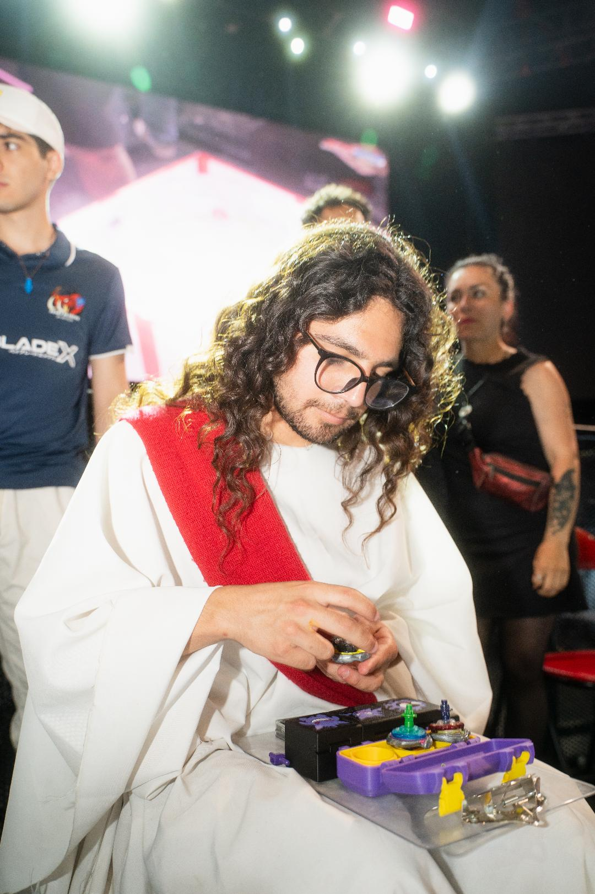

Estudiante de 5to año de Ing. en Realidad Virtual y Diseño de Juegos Digitales

Estudiante de 5to año de Ing. en Realidad Virtual y Diseño de Juegos Digitales, en la UBO. Un apasionado por el modelado 3D, la escenografía, la fotografía, hacer contenido y todo lo referente a ello.
Mi motivación para aprender es querer crear momentos y emociones para poder dejar una huella en cada persona que conozca de mí y mi trabajo, o también poder hacer feliz a cualquier usuario.